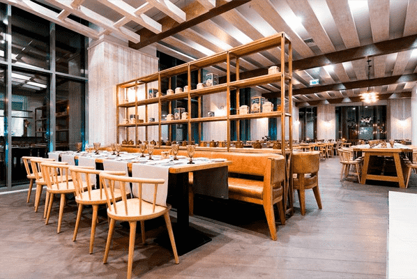
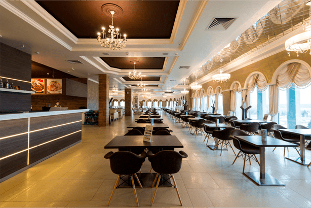
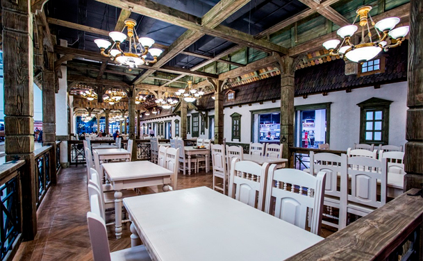

Ресторан «Fornello»

Минск, пр-т Победителей, 20
Ресторан расположен в отеле Minsk Marriott Hotel. Представляет собой светлое пространство, стилизованное под классическую итальянскую тратторию с уютной обстановкой, традиционной деревянной мебелью и открытой кухней с уникальным шефским столом.
Ресторан «Belvedere»

Минск, ТЦ Замок, пр-т Победителей, 65, эт. 4
Заведение отличают светлые и просторные залы с оригинальным интерьером и большими окнами с красивым панорамным видом на город. Ресторан поделен на два зала: Belvedere с зоной самообслуживания и Belvedere Lux, где посетителей обслуживают официанты.
Ресторан «Папараць Кветка»

Минск, ТЦ Замок, пр-т Победителей, 65, эт. 4
Заведение располагается на 4 этаже торгового центра "Замок". В ресторане «Папараць Кветка» сочетаются уютный интерьер, домашняя кухня, демократичные цены и быстрое обслуживание. В меню вы сможете найти более 100 наименований блюд славянской кухни.